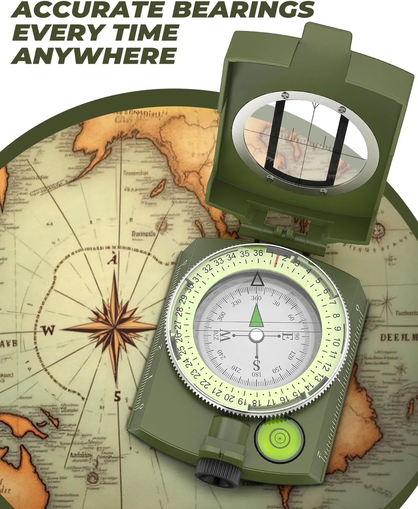
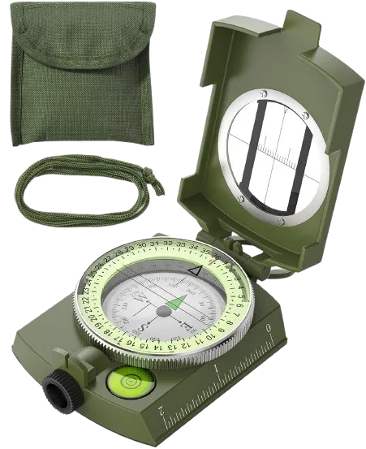
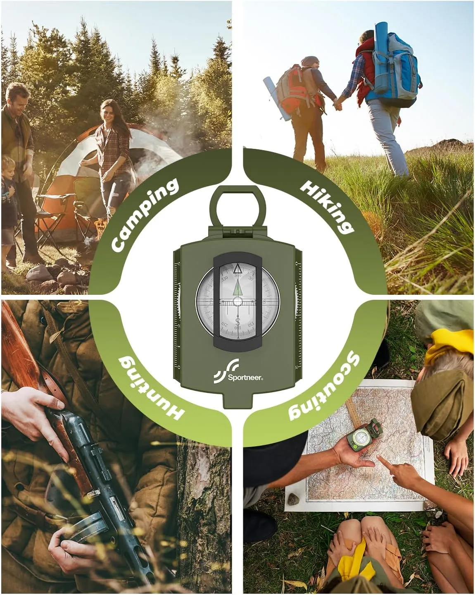
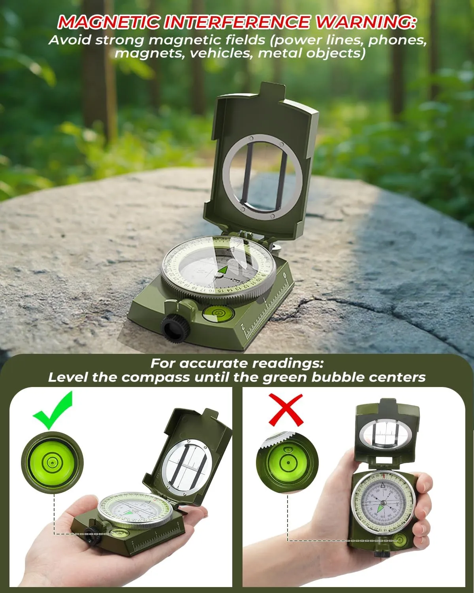
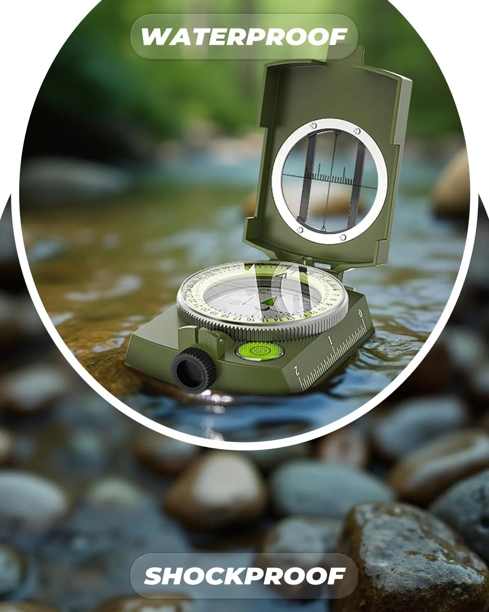
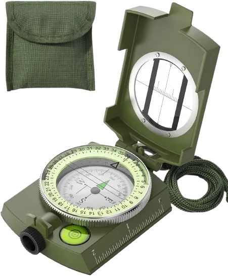

Better bearing checks
The rear sight lens helps magnify the dial for more careful readings when planning a direction or checking a map route.
The Sportneer Orienteering Compass is built for real outdoor use: a metal case, sighting lens, spirit level, glow-in-the-dark dial, waterproof and shockproof construction, plus a strap and carrying pouch for hiking, camping, scouting, backpacking, and survival kits.
This is an editorial affiliate page. The product is sold on Amazon, not directly by Merchant. Always check the live Amazon listing for current price, availability, package contents, safety notes, and seller details.

The buying angle here is practical confidence. This is not just a tiny keychain compass. It has a sighting lens, readable dial, spirit level, ruler edges, metal case, and a more serious outdoor look.

The rear sight lens helps magnify the dial for more careful readings when planning a direction or checking a map route.
The listing highlights a durable metal base and cover, plus waterproof and shock-resistant construction for rugged terrain and weather.
The included pouch and strap make it a complete small outdoor kit for hikers, campers, scouts, kids learning navigation, and survival bags.
This compass makes the most sense for people who want an affordable navigation tool with a more rugged build than a basic plastic compass.

Use it as part of a basic navigation setup for direction checks, map work, route planning, and outdoor learning.
It is compact enough to keep in a backpack, camping box, emergency kit, scout bag, or car outdoor kit.
A strong gift idea for hikers, campers, scouts, nature lovers, and kids learning real-world navigation skills.
A compass is only useful when it is handled correctly. Keep it level, let the needle rotate freely, and avoid magnetic interference from phones, vehicles, power lines, magnets, and large metal objects.

This product is useful for outdoor learning and navigation support, but it should not replace proper route planning, map knowledge, weather awareness, emergency preparation, or common-sense safety decisions.
It is strongest as a practical outdoor tool and gift — not a decorative item. The value is in the metal case, sighting setup, glow markings, and complete carry kit.
A useful backpack addition for basic bearings, route checks, and outdoor navigation practice.
A more serious-feeling tool for kids and beginners learning compass basics and map orientation.
Small enough for emergency bags, car kits, camping gear boxes, and outdoor preparedness gifts.
The product images focus on the features buyers understand quickly: night visibility, rugged casing, waterproof / shockproof positioning, and a comparison against cheaper acrylic-style compasses.

The listing says the north indicator and dial markings glow after sufficient light exposure, making it more usable in low-light conditions.
The product is marketed for harsh weather and tough terrain, with a rugged outdoor construction angle.
The comparison image highlights a metal case, clearer dial, and spirit level versus cheaper acrylic-style alternatives.
Quick checks before clicking through to Amazon.
Yes, it is a practical learning tool for basic map orientation, bearings, and outdoor navigation practice. Beginners should still learn proper compass technique before depending on it outdoors.
The listing says the dial markings glow after sufficient exposure to light. For night use, expose the compass to sunlight or bright light first.
Yes. The product image warns to avoid strong magnetic fields, phones, magnets, vehicles, power lines, and large metal objects when taking readings.
Check package contents, current price, seller, return policy, size, weight, user instructions, and whether it fits your hiking, camping, scouting, or gift use case.
View the Sportneer Orienteering Compass on Amazon to confirm the latest price, package contents, seller details, shipping, return policy, and buyer feedback.
